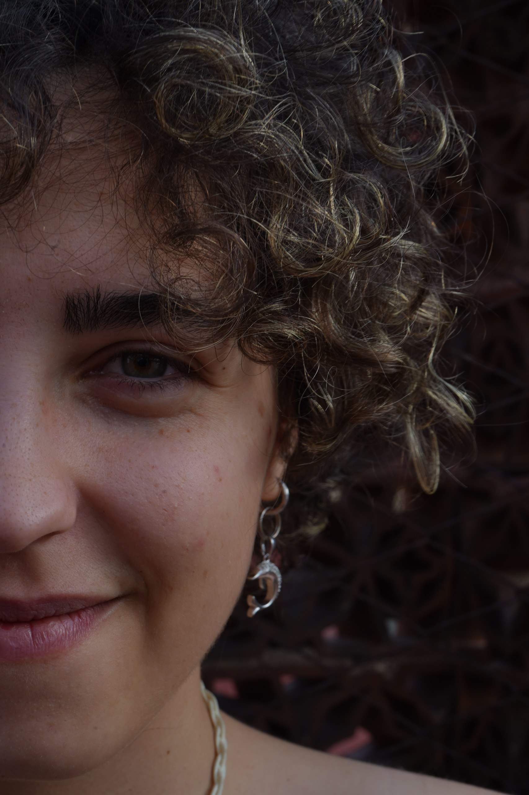

Chi sono?

Sin da piccola ho sempre saputo che la mia strada fosse l'arte, anche se per molto tempo non sapevo in quale direzione esprimermi al meglio. Quando ho iniziato il corso di Grafica, mi sentivo un po’ limitata, come se quel percorso non racchiudesse tutte le possibilità creative che desideravo esplorare. Oggi, invece, sono una studentessa del terzo anno in Nuove Tecnologie dell’Arte, un ambito che mi ha permesso di ampliare i miei orizzonti e di sperimentare oltre la mia zona di comfort, anche grazie a colleghe con cui ho condiviso sfide e progetti. Nel mio stile amo curare i dettagli, sia nei miei disegni digitali che su carta. Ultimamente ho riscoperto una forte passione per Alphonse Mucha, uno dei miei artisti preferiti, e la sua estetica ha influenzato alcune delle mie recenti commissioni.